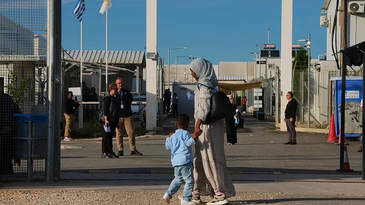
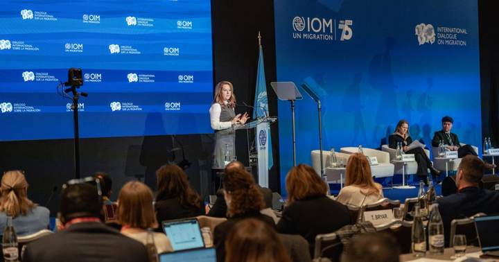
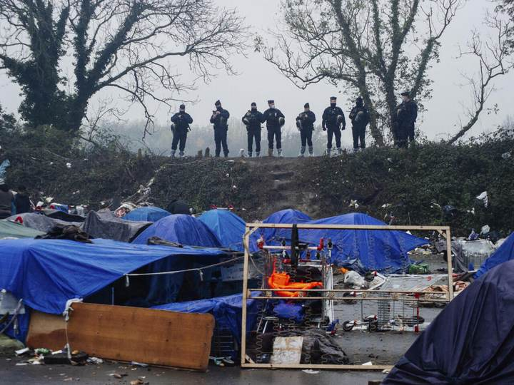
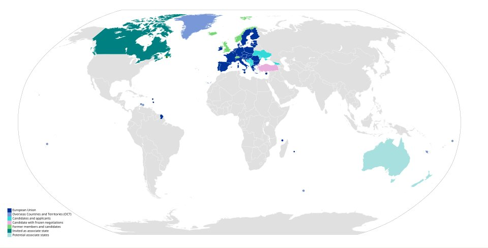
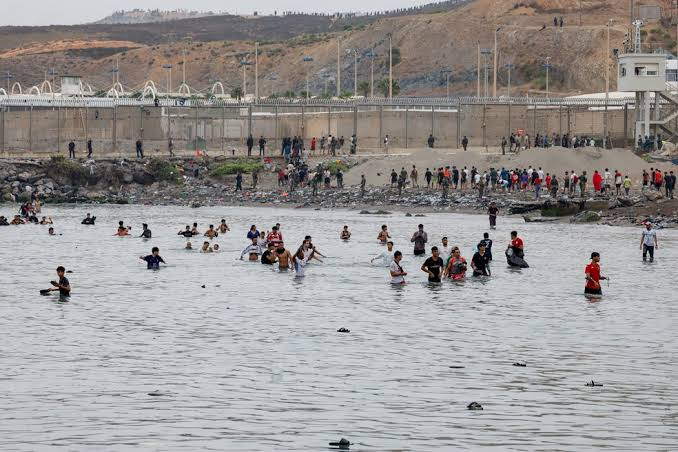
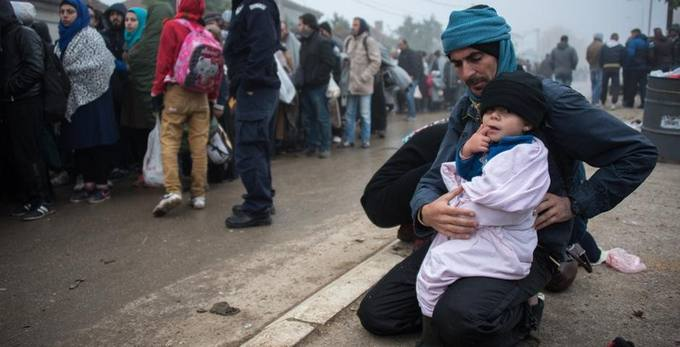
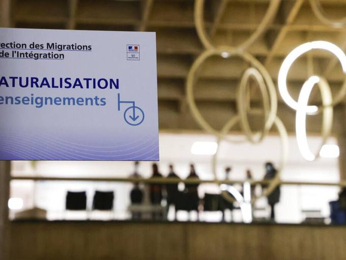
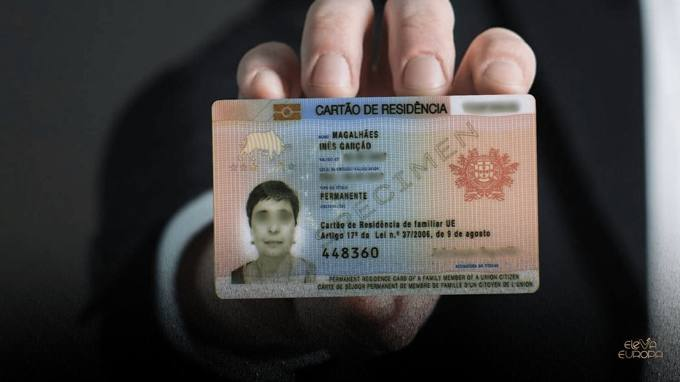
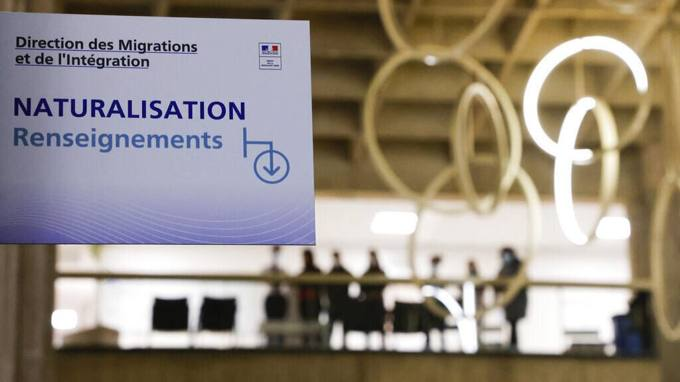

Corte Europeia condena Polônia e Letônia por devolver migrantes a Belarus, mas aceita o rechaço quando não há vulneráveisLa CEDH condamne la Pologne et la Lettonie pour des refoulements vers le Bélarus, mais admet le renvoi en l'absence de personnes vulnérablesEuropean court rules against Poland and Latvia over pushbacks to Belarus, but accepts returns when no vulnerable people are involved
25 NOV 2026 · Silvania Batista
Regularização de 300 mil trabalhadores sem papéis: texto do PS cai sem voto, e a via dos "métiers en tension" segue com prazo até 31 de dezembroRégularisation de 300 000 travailleurs sans papiers : le texte du PS tombe sans vote, et la voie des métiers en tension reste limitée au 31 décembreRegularising 300,000 undocumented workers: the Socialist bill falls without a vote, and the "métiers en tension" route still ends on 31 December
21 NOV 2026 · Silvania Batista

Naturalização de aposentados com pensão estrangeira: Ministério do Interior confirma os critérios enviados às préfecturesNaturalisation des retraités percevant une pension étrangère : le ministère de l'Intérieur confirme les critères transmis aux préfecturesCitizenship for retirees on foreign pensions: Interior ministry confirms the criteria sent to préfectures
20 NOV 2026 · Anne Lopes

Consulado do Brasil em Marselha alerta: ninguém pode cobrar além da tabela nem vender vaga de agendamento para vistoLe Consulat du Brésil à Marseille alerte : personne ne peut facturer au-delà du tarif ni vendre un créneau de rendez-vous pour un visaBrazil's Consulate in Marseille warns: no one may charge above the fee schedule or sell a visa appointment slot
18 NOV 2026 · Silvania Batista
Cinco países da UE anunciam centro em Ruanda para enviar requerentes de asilo rejeitados a partir de 2027Cinq pays de l'UE annoncent un centre au Rwanda pour y envoyer des demandeurs d'asile déboutés à partir de 2027Five EU countries announce a centre in Rwanda to send rejected asylum seekers from 2027
18 NOV 2026 · Silvania Batista

Pacto de Asilo: Espanha, Itália, Grécia e Chipre terão ajuda dos outros países da UE em 2027; a França entra na lista dos "em risco de pressão"Pacte sur l'asile : l'Espagne, l'Italie, la Grèce et Chypre recevront l'aide des autres États membres en 2027 ; la France classée « à risque de pression »Asylum Pact: Spain, Italy, Greece and Cyprus will get help from other EU countries in 2027; France joins the list of states "at risk of pressure"
10 NOV 2026 · Silvania Batista
Imigrar para a Europa ficou mais difícil em 2026: o que mudou em cada país, quem ainda consegue se regularizar e o que esperar de 2027Immigrer en Europe est devenu plus difficile en 2026 : ce qui a changé dans chaque pays, qui peut encore se régulariser et ce qui attend les immigrés en 2027Moving to Europe got harder in 2026: what changed in each country, who can still regularise their status and what to expect in 2027
10 NOV 2026 · Silvania Batista
Morte de Gisele Meira na EspanhaMort de Gisele Meira en EspagneThe death of Gisele Meira in Spain
20 ABR 2026 · 5 MIN · PT/FR ·
Mélenchon promete revogar a circular Retailleau sobre naturalização: o que vale hojeMélenchon promet d'abroger la circulaire Retailleau sur la naturalisation : ce qui s'applique aujourd'huiMélenchon pledges to scrap the Retailleau circular on naturalisation: what applies today
9 NOV 2026 · Silvania Batista
Profissões em falta: o Senado rejeita o direito automático ao título de residência para trabalhadores estrangeirosMétiers en tension : le Sénat rejette le droit automatique au titre de séjour pour les travailleurs étrangersShortage occupations: the French Senate rejects an automatic right to a residence permit for foreign workers
6 NOV 2026 · Silvania Batista
Trabalhadores estrangeiros em profissões em falta: o Senado discute nesta quinta um direito à regularização que a comissão rejeitouTravailleurs étrangers dans les métiers en tension : le Sénat débat jeudi d'un droit à la régularisation rejeté en commissionForeign workers in shortage jobs: France's Senate debates on Thursday a right to regularisation that its committee rejected
4 NOV 2026 · Anne Lopes
Títulos de residência: Nuñez quer repetir em 2027 o reforço de pessoal nas préfecturesTitres de séjour : Laurent Nuñez veut reconduire en 2027 les renforts de personnel en préfectureResidence permits: Nuñez wants to repeat extra prefecture staffing in 2027
4 NOV 2026 · Silvania Batista
Semana Nacional da Conciliação vai até sexta, 6 de novembro, com audiências também virtuaisBrésil : la Semaine nationale de la conciliation se tient jusqu'au 6 novembre, avec aussi des audiences virtuellesBrazil's National Conciliation Week runs until Friday 6 November, with virtual hearings too
3 NOV 2026 · Robson Alves

IA e desinformação transformam migrantes em alvos, alerta a diretora da OIML'IA et la désinformation font des migrants des cibles, alerte la directrice de l'OIMAI and misinformation are turning migrants into targets, IOM chief warns
3 NOV 2026 · Anne Lopes
Reino Unido dobra para 10 anos o prazo para a residência permanente: o que muda para quem vive lá ou pensa em se mudarLe Royaume-Uni porte à 10 ans le délai pour obtenir la résidence permanente : ce qui change pour ceux qui y vivent ou veulent s'y installerThe UK doubles the wait for permanent residence to 10 years: what changes for people living there or planning to move
3 NOV 2026 · Silvania Batista
TSE volta a emitir certidão de quitação eleitoral nesta terça, 3 de novembro, e reabre o cadastroLe TSE délivre à nouveau le certificat de régularité électorale ce mardi 3 novembre et rouvre le fichier électoralBrazil's electoral court resumes voter clearance certificates on Tuesday 3 November and reopens the voter register
2 NOV 2026 · Robson Alves
Título de residência: a prefeitura passa a ter 90 dias para responder, e quem trabalha ganha novas proteçõesTitre de séjour : la préfecture a désormais 90 jours pour répondre, et les salariés étrangers gagnent de nouvelles protectionsResidence permits: French prefectures now have 90 days to answer, and foreign workers gain new protections
2 NOV 2026 · Silvania Batista
Encceja Exterior 2026: a prova que dá diploma do ensino fundamental ou médio a brasileiros no exterior é em 22 de novembro, e Paris está entre as cidadesEncceja Exterior 2026 : l'examen qui permet aux Brésiliens de l'étranger d'obtenir le diplôme du collège ou du lycée a lieu le 22 novembre, à Paris notammentEncceja Exterior 2026: the exam that gives Brazilians abroad a middle or high school diploma takes place on 22 November, with Paris among the cities
1 NOV 2026 · Robson Alves

Cinco militantes britânicos de ultradireita são presos perto de Dunkerque por filmar ao vivo o assédio a migrantes, e a França prepara a expulsãoCinq militants britanniques d'ultradroite interpellés près de Dunkerque pour avoir filmé en direct le harcèlement de migrants, la France prépare leur expulsionFive British far-right activists arrested near Dunkirk for livestreaming the harassment of migrants, as France prepares to expel them
1 NOV 2026 · Anne Lopes
A França reconhece por lei a "indignidade" imposta aos repatriados da Indochina e cria uma reparação para quem viveu nos centros de acolhimentoLa France reconnaît par la loi « l'indignité » imposée aux rapatriés d'Indochine et crée une réparation pour ceux qui ont vécu dans les centres d'accueilFrance recognises in law the "indignity" imposed on people repatriated from Indochina and creates compensation for those who lived in reception centres
1 NOV 2026 · Anne Lopes
Presidencial de 2027: o que os pré-candidatos propõem para os estrangeiros que vivem na FrançaPrésidentielle 2027 : ce que proposent les prétendants pour les étrangers qui vivent en France2027 presidential race: what the contenders propose for foreigners living in France
29 OUT 2026 · Silvania Batista
Socialistas levam ao plenário uma proposta para regularizar trabalhadores sem documentos após seis meses de trabalhoLes socialistes portent en séance une proposition pour régulariser les travailleurs sans papiers après six mois d'activitéSocialists bring to the floor a bill to regularise undocumented workers after six months of work
28 OUT 2026 · Silvania Batista
Título de residência travado na ANEF? Nas Yvelines, alguns pedidos passam a ser feitos pela Démarche numériqueTitre de séjour bloqué sur l'ANEF ? Dans les Yvelines, certaines demandes passent désormais par Démarche numériqueResidence permit stuck on ANEF? In the Yvelines, some applications now go through Démarche numérique
20 OUT 2026 · La rédaction

Cúpula da UE: líderes pedem um "quadro de emergência" para a migração, mas nenhuma regra muda por enquantoSommet de l'UE : les dirigeants veulent un « cadre d'urgence » pour la migration, mais aucune règle ne change pour l'instantEU summit: leaders call for an "emergency framework" on migration, but no rule changes for now
18 OUT 2026 · La rédaction
A França abre um "diálogo técnico" com os talibãs para expulsar afegãos, e a Human Rights Watch pede que Paris recueLa France ouvre un « dialogue technique » avec les talibans pour expulser des Afghans, et Human Rights Watch demande à Paris de reculerFrance opens a "technical dialogue" with the Taliban to deport Afghans, and Human Rights Watch urges Paris to back down
17 OUT 2026 · La rédaction
Taxa de 1.000 euros por ano por trabalhador de fora da UE: o que o RN propõe, e o que já existe hojeTaxe de 1 000 euros par an par salarié extra-européen : ce que propose le RN, et ce qui existe déjàA €1,000-a-year levy per non-EU worker: what the RN is proposing, and what already exists
15 OUT 2026 · La rédaction
"Abuso administrativo": o pedido para que a lei proteja as mulheres estrangeiras vítimas de violência« Abus administratif » : la demande pour que la loi protège les femmes étrangères victimes de violences"Administrative abuse": the call for the law to protect foreign women who are victims of violence
5 OUT 2026 · La rédaction
Não votou no 1º turno? Como justificar a ausência morando no exterior, e até quandoVous n'avez pas voté au 1er tour ? Comment justifier votre absence depuis l'étranger, et jusqu'à quandDid not vote in the first round? How to justify your absence while living abroad, and by when
5 OUT 2026 · La rédaction
Brasil vai ao 2º turno: Flávio Bolsonaro e Lula decidem a Presidência em 25 de outubro, e a diáspora na França votou diferenteLe Brésil ira au second tour : Flávio Bolsonaro et Lula joueront la présidence le 25 octobre, et la diaspora en France a voté autrementBrazil heads to a runoff: Flávio Bolsonaro and Lula will decide the presidency on 25 October, and the diaspora in France voted differently
5 OUT 2026 · La rédaction
A Universidade de Lisboa será o maior colégio eleitoral do mundo no domingo, maior do que qualquer local no BrasilL'Université de Lisbonne sera le plus grand bureau de vote au monde dimanche, devant n'importe quel lieu au BrésilThe University of Lisbon will be the world's largest polling site on Sunday, bigger than any location in Brazil
1 OUT 2026 · La rédaction
Ajudas sociais e estrangeiros: o que propõe o plano de "délai de carence" no orçamento de 2027Aides sociales et étrangers : ce que propose le « délai de carence » dans le budget 2027Social benefits and foreigners: what the "waiting period" plan in the 2027 budget proposes
30 SET 2026 · La rédaction
Eleições no Brasil: como e em quem vota o brasileiro no exterior no dia 4 de outubroÉlections au Brésil : comment et pour qui vote le Brésilien de l'étranger le 4 octobreBrazil's elections: how and for whom Brazilians abroad vote on 4 October
29 SET 2026 · La rédaction
Dá para trabalhar à distância na França com o visto "visiteur"? O ministério esclarecePeut-on travailler à distance en France avec le visa « visiteur » ? Le ministère préciseCan you work remotely in France on a "visitor" visa? The ministry clarifies
28 SET 2026 · La rédaction
Pedidos de asilo na UE caem ao menor nível desde 2021, diz agência europeiaLes demandes d'asile dans l'UE tombent au plus bas depuis 2021, selon l'agence européenneAsylum applications in the EU fall to their lowest level since 2021, European agency says
25 SET 2026 · La rédaction
Renovação automática de títulos de residência: por que o projeto travou no SenadoRenouvellement automatique des titres de séjour : pourquoi le texte est bloqué au SénatAutomatic renewal of residence permits: why the bill stalled in the Senate
25 SET 2026 · La rédaction
Casado ou em família com um cidadão europeu? Você pode ter direito a residir na FrançaMarié ou en famille avec un citoyen européen ? Vous pouvez avoir un droit au séjour en FranceMarried to or family of an EU citizen? You may have your own right to reside in France
23 SET 2026 · La rédaction
Délai de carence: a espera que a França quer impor a estrangeirosDélai de carence : l'attente que la France veut imposer aux étrangersDélai de carence: the wait France wants to impose on foreigners
21 SET 2026 · 6 MIN · PT/FR · La rédaction
Brasil vai às urnas em outubro: Lula favorito, mas a direita se reorganiza sem BolsonaroLe Brésil aux urnes en octobre : Lula favori, mais la droite se recompose sans BolsonaroBrazil heads to the polls in October: Lula the favorite, but the right regroups without Bolsonaro
7 SET 2026 ·

Espanha assume parte do porto de Ceuta para abrigar e devolver migrantes — o enclave vira o ponto mais quente da fronteira da UEL'Espagne réquisitionne une partie du port de Ceuta pour héberger et renvoyer des migrants — l'enclave devient le point le plus chaud de la frontière de l'UESpain takes over part of the port of Ceuta to shelter and return migrants — the enclave becomes the hottest point on the EU border
6 SET 2026 ·

O outro lado da travessia: o Brasil entra na lista de expulsões da FrançaL'autre côté de la traversée : le Brésil entre dans la liste des expulsionsThe other side of the crossing: Brazil joins France's deportation list
25 AGO 2026 ·

A França endureceu as regras: agora é preciso provar que se integrouLa France durcit ses règles : il faut désormais prouver son intégrationFrance has tightened the rules: now you have to prove you've integrated
24 AGO 2026 ·
Estudantes estrangeiros: a prova de recursos salta de 615 € para 877,5 € por mêsÉtudiants étrangers : la preuve de ressources passe de 615 € à 877,5 € par moisForeign students: the proof of resources jumps from €615 to €877.5 per month
21 AGO 2026 · 2 MIN · PT/FR ·

Renovar o título sem stress? A proposta de renovação automática que pode tocar 2 milhõesRenouveler son titre sans stress ? La proposition de renouvellement automatique qui pourrait toucher 2 millionsRenew your permit without the stress? The automatic renewal proposal that could affect 2 million
21 AGO 2026 · 6 MIN · PT/FR ·

Renovar o seu título de residência ficou mais caro em 2026Renouveler votre titre de séjour coûte plus cher en 2026Renewing your residence permit got more expensive in 2026
19 AGO 2026 · 7 MIN · PT/FR ·
Regularização pelo trabalho: a via que expira a 31 de dezembro de 2026Régularisation par le travail : la voie qui expire le 31 décembre 2026Regularization through work: the route that expires on December 31, 2026
19 AGO 2026 · 8 MIN · PT/FR ·
Menos tempo para recorrer: o que muda no asilo com o Pacto europeuMoins de temps pour faire appel : ce que change le Pacte européen sur l'asileLess time to appeal: what changes for asylum under the European Pact
19 AGO 2026 · 7 MIN · PT/FR ·
Regulamento de Retorno: a UE redesenha as expulsõesRèglement Retour : l’UE redessine les expulsionsReturn Regulation: the EU redesigns deportations
17 JUN 2026 · 5 MIN · PT/FR ·
Bruxelas abre processo contra Portugal (apoio judiciário)Bruxelles ouvre une procédure contre le PortugalBrussels opens case against Portugal (legal aid)
13 JUN 2026 · 5 MIN · PT/FR ·
Migração: o grande desafio do século XXIMigration : le grand défi du XXIe siècleMigration: the great challenge of the 21st century
12 JUN 2026 · 5 MIN · PT/FR ·
A Europa precisa de pessoasL'Europe a besoin de mondeEurope needs people
12 JUN 2026 · 5 MIN · PT/FR ·
Canal da Mancha: a nova fronteira mortalLa Manche : la nouvelle frontière mortelleThe English Channel: the new deadly border
14 MAI 2026 · 12 MIN · PT/FR ·
França: protocolo Ebola ativadoFrance : protocole Ebola activéFrance: Ebola protocol activated
21 MAI 2026 · 8 MIN · PT/FR ·
Espanha: porta de entrada e contradiçõesEspagne : porte d'entrée et contradictionsSpain: gateway and contradictions
10 Abr 2026 · 6 min · PT/FR ·